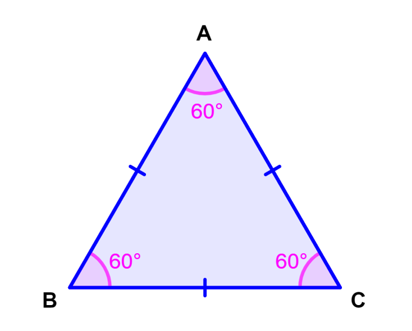

El triángulo equilátero es aquel cuyos tres lados miden la misma longitud. Así, sus tres ángulos internos también son iguales y miden 60º.
Este tipo de triángulo es un caso muy particular dentro de los tipos de triángulo según la longitud de sus lados. Cabe señalar que el triángulo equilátero es a su vez acutángulo porque todos sus ángulos internos son agudos. Es decir, todos sus ángulos son menores que 90º. Otro punto para señalar es que este tipo de triángulo es un polígono regular. Es decir, que tiene sus tres lados y sus tres ángulos internos iguales. Otro punto para señalar es que este tipo de triángulo es un polígono regular. Es decir, que tiene sus tres lados y sus tres ángulos internos iguales. En ese sentido, vale recordar que un polígono es una figura geométrica bidimensional que se constituye de la unión de distintos puntos (que no formen parte de la misma línea) mediante segmentos de recta. De ese modo, se construye un espacio cerrado.
Área(A): En este caso, nos basamos en la fórmula de Herón donde s es el semiperímetro, es decir, s = P/2 = 3a/2.
Perímetro(P): P = a + a + a = 3a
